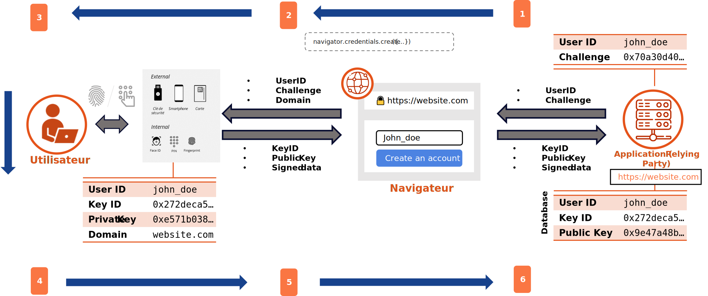
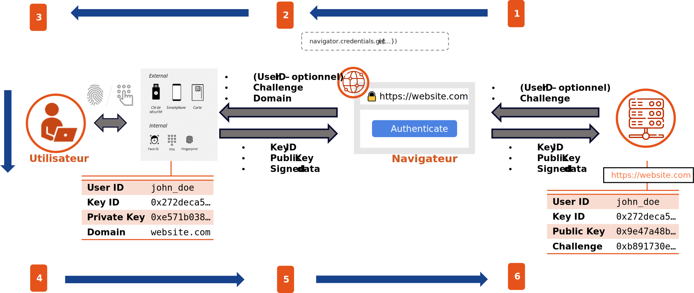

- WebAuthn introduit des nouvelles fonctions Javascript permettant aux navigateurs de gérer l’enregistrement et l’authentification d’un utilisateur à travers un Authenticator pour un site web
- Les paramètres fournis à ces fonctions permettent de «customiser» la cinématique FIDO2 (quel type d’Authenticator souhaité (interne vs externe), quel algorithme de signature utiliser, …)
- Ces nouvelles fonctions sont aujourd'hui largement supportées par les navigateurs (Chrome, Firefox, Edge, Safari, ...)
#1 Exemple avec un authenticator externe
#2 Exemple avec un authenticator interne
L'enregistrement avec un authenticator #1
L'enregistrement avec un authenticator #2

L'authenticator génère une paire de clés asymétriques pour chaque site enregistré. La signature des données par l'authenticator permet au Relying Party d'enregistrer l'authenticator, puis d'authentifier l'utilisateur.
L'authentification avec un authenticator #1
L'authentification avec un authenticator #2

Pour aller plus loin ...
- Spécifications WebAuthn : https://www.w3.org/TR/webauthn-2/
- FIDO2, en authentification simple ou en deuxième facteur ?
- Passkey, l'art de répliquer les clés FIDO2 sur tous vos devices
- FIDO2 en entreprise, quelle stratégie et quelles problématiques ? (process d'achat et de distribution des authenticators, gestion de l'oubli/perte, accompagnement au changement, ...)